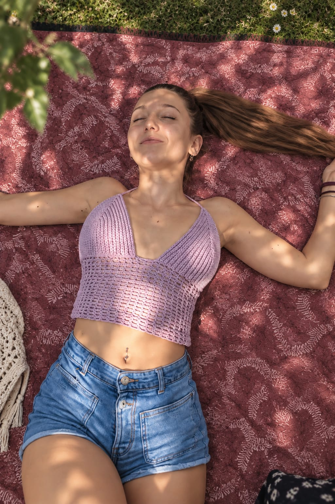
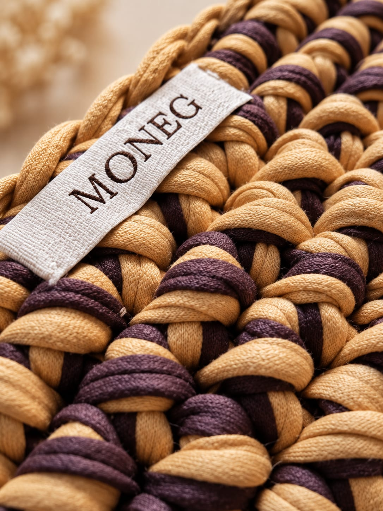
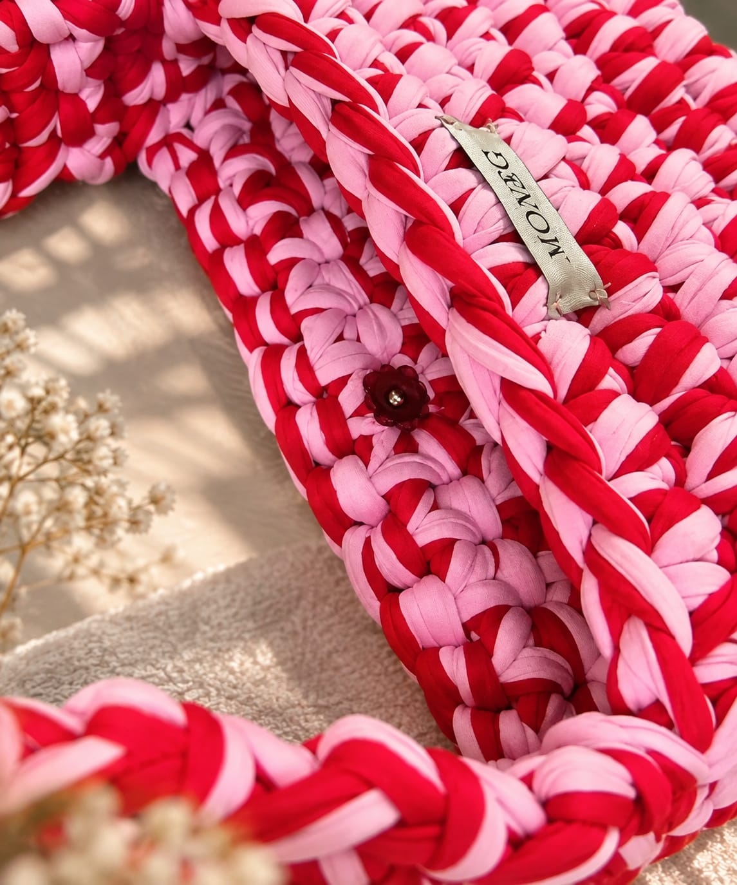

Rosa y rojo
Hecho a mano · Consultar disponibilidad
CROCHET, CON CARÁCTER.
Un hilo. Mil posibilidades.
Prendas y accesorios con una forma
muy propia de estar en el mundo.

Un hilo lo cambia todo.
SIGUE EL HILO ↓01 / EL MUESTRARIO
Elige un color.
Encuentra tu carácter.
Hecho a mano · Consultar disponibilidad
Hecho a mano · Consultar disponibilidad
Hecho a mano · Consultar disponibilidad
Hecho a mano · Consultar disponibilidad
Hecho a mano · Consultar disponibilidad
Hecho a mano · Consultar disponibilidad
¿Cuál es tu flechazo? Consulta el precio y la disponibilidad de cada pieza por Instagram.
02 / LA HUELLA DE LAS MANOS
Elegir un color. Seguir un hilo.
Ver cómo algo toma forma
entre las manos.
El crochet tiene su propio ritmo. Y en cada punto queda un poco de quien lo hace. De ahí nace Moneg Crochet: de disfrutar el proceso tanto como la pieza terminada.
Imaginemos algo para tiAcércate. Lo especial está en el punto.


¿Y SI TIRAMOS DEL HILO?
Un color que te encanta. Una pieza que imaginas.
Todo empieza por una idea.
@moneg_crochet · Cuéntanos tu idea por mensaje directo.